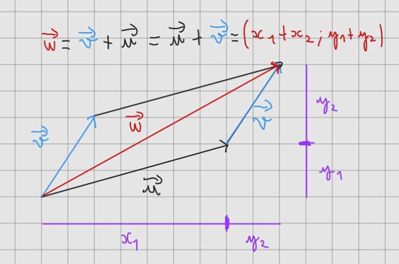
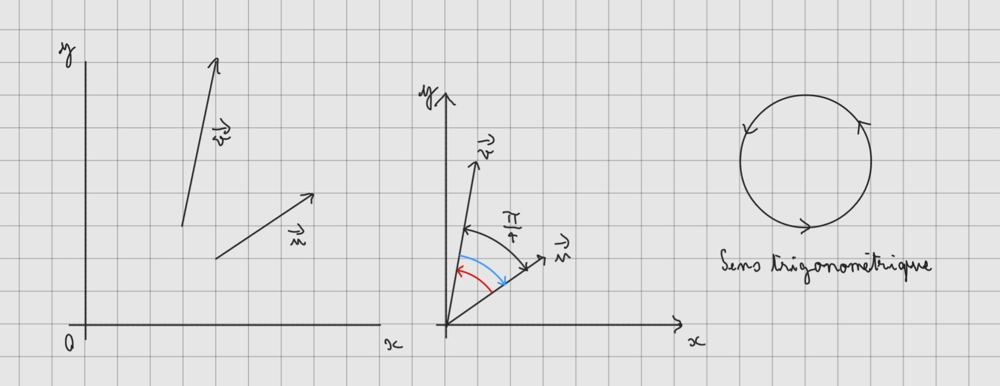
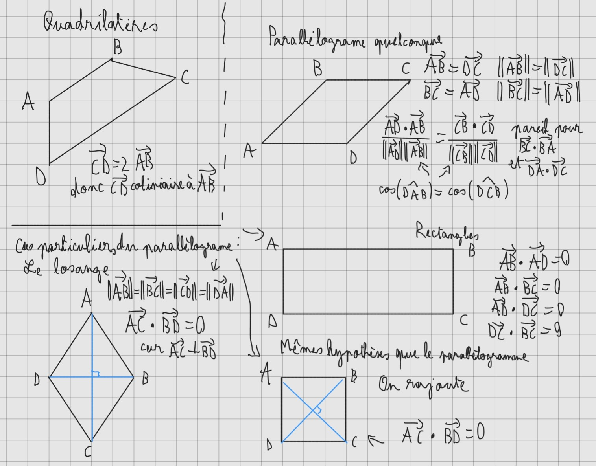
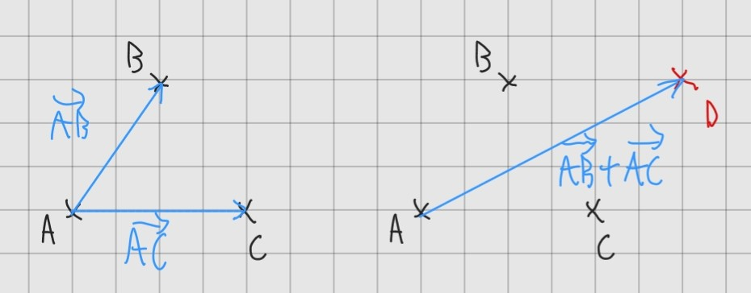

Les vecteurs
Vecteur
Dans un repère orthonormé (ce qui ne sera pas toujours le cas).
possèdant comme origine le point O et comme vecteurs unitaires du plan i et j
( le repère (O, i, j) )
Un vecteur (en 2 dimentions) peut être vu comme une flèche possèdant:
- une direction (orientation selon une droite)
- un sens ( ↗ ou ↙ )
- une norme ( la taille du vecteur )
Un vecteur est également une combinaison linéaire
Exemple:
on prend un vecteur u s'écrivant u=( x ; y ) peut s'écrire u= x × i + y × j
Bien sûr un vecteur peut contenir des coordonées négatives: u=( 7 ; -3 ) signifie simplement que le vecteur vas globalement vers le sud-est
Relation de Chales
Si u et v sont deux vecteurs tel que u=( x1 ; y1 ) et v=( x2 ; y2 )
alors on peut construire un vecteur w tel que
w=u + v = ( x1+x2 ; y1+y2 )

Si u=( x ; y ) alors 2 × u=2u=( 2x ; 2y )
Exemple:
Si on à t=( 2 ; 3 ) et v=( 8 ; 6 )
alors: t+4v=( 2 + 4 × 8 ; 3 + 4 × 6 )=( 34 ; 27 )
de même: 2t-3v = 2t+(-3)v = ( 2×2+(-3)×8 ; 2×3+(-3)×6 ) = ( -20 ; -12 )
Remarque:
Il faut toujours se dire qu'on additionne les x avec les x et les y avec les y
on peut également le voir comme ceci:
Norme d'un vecteur
La norme d'un vecteur u est notée ‖u‖ et représente sa longueur
Elle est calculable par un simple théorème de Pythagore:
Angle orienté entre deux vecteurs

Commençons directement par l'exemple ci-dessus:
Si on fait un calcul on se rend compte que l'angle entre les deux vecteurs u et v est de π/4
L'angle orienté entre u et v, noté ( u , v )
l'angle allant de u vers v dans le sens trigonométrique.
Dans cet exemple-ci, comme pour aller de u vers v on vas dans le sens trigonométrique.
( u , v ) = π/4
Et ( v , u ) = -π/4 car on vas dans le sens opposé au sens trigonométrique
(personnelement j'ai appris cette notion tard car en seconde on ne me l'avait pas appris alors que c'est au programme)
Produit Scalaire
Le produit scalaire est une sorte de multiplication entre deux vecteurs (c'est pas vraiment le cas mais on utilise les mêmes signes)
Il y a deux manières de le calculer:
- Par coordonnées
Si on a u=( x1 ; y1 ) et v=( x2 ; y2 )
alors le produit scalaire de u et v est:
u ⋅ v = u × v = x1x2 + y1y2 -
Par la formule originale
u ⋅ v = ‖u‖×‖v‖×cos( ( u ; v ) )
Autrement dit: Le produit scalaire de deux vecteur, c'est le produit des normes des deux vecteurs par le cosinus de l'angle entre les vecteurs.
Comme exemple on a: u=( 5 ; 2 ) et v=( 4 ; 1 )
u ⋅ v = 5 × 4 + 2 × 1 = 22
Par ailleur avec la formule originale:
u ⋅ v
= ‖u‖×‖u‖×cos( 0 )=‖u‖2
( cos(0)=1 car l'angle entre un vecteur et lui même est nul)
Donc la norme d'un vecteur est la racine de son produit scalaire avec lui même
‖u‖ = u ⋅ u = u2
Colinéarité
Deux vecteurs sont dit colinéaires si ils possèdent la même direction
On peut rapidement remarquer la colinérarité de deux vecteurs visuellement, puisqu'ils on l'air "parallèles"
Par coordonnées on peut remarquer la colinéarité par la relation de proportionnalité
Exemple u=(2,3) v=(6,9) et w=(-2,-3) sont colinéaires entre eux car
v=3×u et w=(-1)×u
Voici quelques exemples visuels (par ailleur w est l'opposé de u)
A contrario, les vecteurs u, K et e ne sont tout les trois pas colinéraires entre eux
Important: pour savoir si deux vecteurs sont orthogonaux (forment un angle droit), il suffit de regarder si leur produit scalaire est nul
La raison est simple u ⋅ v = ‖u‖×‖v‖×cos( ( u ; v ) ) et deux vecteurs orthogonaux on un angle orienté de ±π/2
et cos(π/2)=cos(-π/2)=0 donc u ⋅ v=0
(accessoire) si u ⋅ v=‖u‖×‖v‖ ou u ⋅ v= -‖u‖×‖v‖ alors u et v sont colinéaires
Utilisation des points dans le repère
Petits rappel/apprentissage sur les repères
Un repère est constitué d'une origine souvent appelée O, et d'axes
(en 2D, abscisse et ordonée | en 3d abscisse ordonée et cote) il est appelé R2 pour le plan orthonormé
Une nouvelle définition d'un repère est disponible avec la théorie vectorielle:
Un repère est constitué d'une origine O et de plusieurs vecteurs non colinéaires entre eux.
Ce repère est noté et définit comme ( O , i , j ) avec i et j deux vecteurs unitaires non colinéaires
Dans ces exemple, le repère n°3 décide juste de remplacer les fameux i et j par u et v.
Dans ces exemple, le repère n°4 est tout a fait logique.
Pourquoi ? Et bien c'est très logique, en mathématiques un vecteur n'est lié en aucuns cas à un point, il existe partout
Il n'est donc pas obligatoire de mettre les vecteurs unitaires i et j partant du point O.
Passons maintenant aux points.
Bon, il est normal qu'on se dise, mais c'est bon les points je connais, coordonnées tout ça tout ça.
Mais maintenant on vas parler vecteur entre deux points A=( xA ; yA ) et B=( xB ; yB )
Et oui, pour aller de A vers B, quoi de mieux qu'un vecteur.
Ce vecteur, que l'on vas nommer AB possède comme coordonnées ( xB-xA ; yB-yA ) pour la raison suivante.
Trouver les coordonées du vecteur AB peut également se voir comme une simple relation de Chales.
Et ceci est possible en considérant qu'un point est un vecteur.
Le point A possède en réalité les mêmes coordonnées que le vecteur OA de même pour OB
Par relation de Chales, on se rend compte que le chemin pour aller de A à B, est le même que pour aller de A à O puis de O à B, donc que
AB = AO + OB
Or AO est l'opposé du vecteur OA donc AO = -OA
Donc AB = -OA + OB
= OB-OA
Ce qui confirme bien que les coordonées de B moins celles de A donne les coordonées de AB
On peut définir un point par rapport à un autre grace à un ou plusieurs vecteurs
Exemple: B est l'image de A=( 2 ; 5 ) par la translation de vecteur u=( 2 ; -8 )
On peut également trouver B en disant que A est représenté par OA
OB=OA+u=( 2 + 2 ; 5 + -8 )=( 4 ; -3 )
Donc le point B à pour coordonées ( 4 ; -3 )
Reconnaissance de figures à partir de vecteurs
Maintenant, voyons comment reconnaitre une figure à lorsque l'on ne connais que les points sans forcément avoir de repère visuel
Triangles
Un triangle possède 3 points donc 3 vecteurs qui vont d'un point à un autre. Nos outils principaux seront: la norme et le produit scalaire Comment faire alors pour reconnaitre les triangles basiques tel que l'isoscèle ? Si un triangle ABC est isoscèle en A, alors on sait que ‖AB‖ = ‖AC‖ car simplement les cotés AC et AB d'un isoscèle en A sont égaux. Pour reconnaitre un triangle équilatéral, il faut alors que ‖AB‖ = ‖AC‖ = ‖BC‖ Voici un exemple visuel: 
Les parallélogrammes
Pour rappel, un parallélogramme est un quadrilatère (4 points 4 cotés) dont les cotés opposés sont alignés Pour savoir si l'on à affaire à un parallélogramme